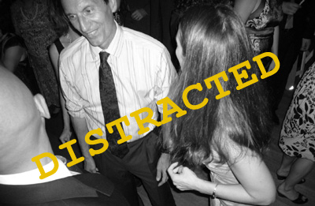

Upcoming birthdays:
- {{person.first}} -
{{birthdayFmt(person, "MMM DD")}}
Your Kids’ Addresses

Calling to find out kids' addresses while
letting baby
drive is a leading cause of
car accidents

Grandfather photographed at moment he
begins to plan to
forget child's address. Also, child cruelly led to believe that he is
navigating tricycle

Our scientists have proven it impossible to
both dance and recall children's addresses at same time
Alex Wheeler (b. Jul 4)
(617) 686-4896
28 Raymond St.
Allston, MA
02134
[ Google
map ]
Sarah Wheeler (b. Aug 28) and Jon Korn (b. Aug 20), anniversary May 22
(909) 456-9096
487 43rd Street #1
Oakland, CA 94609
[ Google
map ]
Rebekah Wheeler (b. Nov 3) and Ben G (b. Jan 2), anniversary Aug 24
(617) 959-9798
60 Winfield Street
San Francisco, CA
94110
[ Google
map ]
Jonathan Erickson (b. Aug 7)
and Alejandra Velez (b. Oct 13), anniversary Aug. 31
(310) 350-7514
940 Via Camino #5
Wilmington, CA 90744
[ Google
map ]
Ben Wheeler (b. Jul 31), Kate Cortesi (b. Feb 2), anniversary Sept 7,
Carmen (b. Jun
3) and
Nina
Wheeler (b. Aug 19)
(917) 254-1578, (646) 651-2046
483 Putnam Ave.
#1
Brooklyn, NY 11221
[ Google
map ]
work:
68 Jay St. Suite 201
Brooklyn, NY 11201-1182
[ Google
map ]
Jennifer Jaffé (b. Apr 18), Hugo Jaffé (b Nov 19), anniversary
Oct 9,
Toby
(b. May 10) and
Sam
Jaffé (b. Sept 26)
(831) 466-0974 (home)
(917) 859-4667 (cell)
1503 Escalona
Drive
Santa
Cruz, CA
95060
[ Google
map ]
Mariam Gates (b. Oct 10), Rolf Gates (b. Feb 3), anniversary May 16,
Jasmine (b. May
11) and
Dylan (b. May
19) Gates
(617) 271-7106, (831) 454-8895
122 Echo St
Santa Cruz, CA 95060
[ Google
map ]
Elizabeth Zackheim(b. Sept 1) and Adrian Zackheim (b. Sept 19), anniversary Aug
15th
(917) 407-1342, (212) 366-2659
185 West End Avenue, Apt 26H
New York, NY 10023
[ Google
map ]
(And of course...)
Gordon Wheeler (b. Apr 10) and Nancy Lunney-Wheeler (b. Jun 25), anniversary Dec 27
(831) 426-6099 (home)
127 Abby Ct.
Santa Cruz, CA 95062-1425
[ Google
map ]
Other useful info
How to reenable a Google Calendar that you have been invited to in the
past,
but which
you have somehow lost track of, and
are
too
embarrassed to ask your grandchildren to help you find